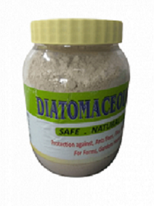
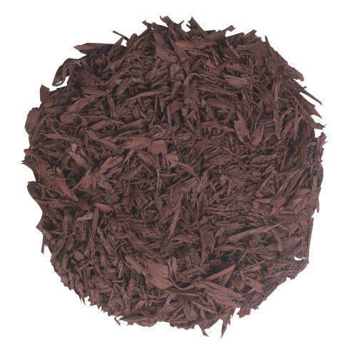
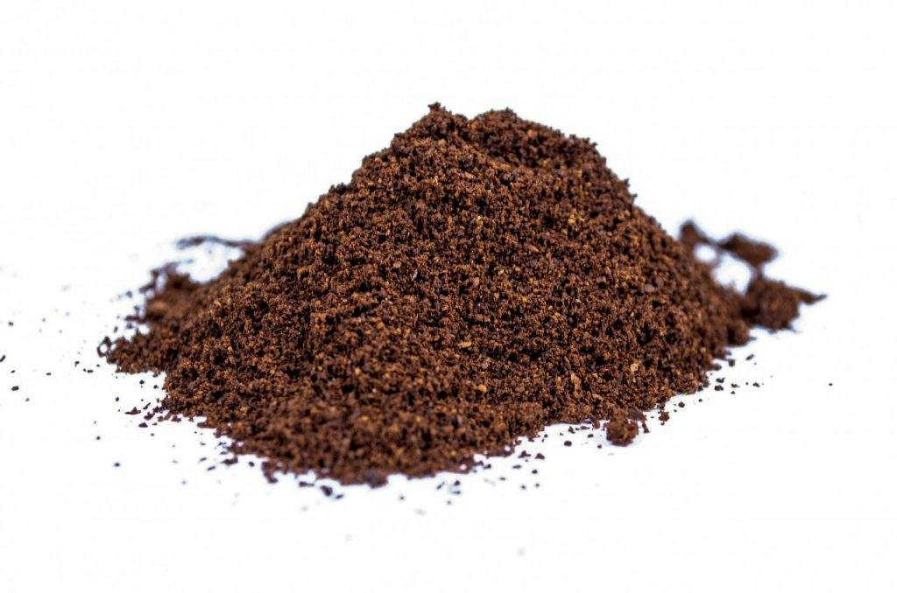

.jpeg)
Barrix Plantcharger, Organic Plant Nutrition Mixture
Increases the crop yield.
Ensuring better nutrient balance.
Increases buffering properties of soil acts as organic catalyst.
Improves immunity.
Improves root and shoot growth.
Increases the number of tillers, flowers and fruit set.
Dosage : 1 ml water
Usage : Through Drip Irrigation or Foliar Spray
Mahyco cotton seeds MRC 7367 BG-LL
You can contact us at -
This hybrid variety grows as an erect tall plant type with large bolls weighing about 5.0 to 5.5 grams.
With large bolls and medium maturity of 160 to 170 days, this variety lends itself to easy picking during harvest season and also facilitate timely wheat sowing.
This high yielding variety is suitable for 4 row seed drill sowing on medium to heavy soil.

Krishna Giomin Diatamaceous Earth Safe, Natural And Organic Way To Control Insects And Pests , Use for Insect Killing.
This powder has to be sprinkled over the plants in dry form. So apply difficult to reach areas it can also be mixed in water and spreyed, but it will start to act only after it has dried.
Way To Use : You can just use by spraying it on the plant through any bottles by doing holing on the cap. Use hand gloves for use. It will not damaged to skin during any Contact. For big tree can be used by spray. During Sunlight use it if you are using by spray.
Make a circle around plants so insect can not cross it. It will show results After 48 Hrs after spraying.
OTHER

Mulch
The use of mulch in agriculture provides many benefits to the soil
by reducing evaporation, improving temperatures,adjusting the microbial biomass,
maintaining the soil organic carbon balance, increasing nutrient cycling,promoting soil enzyme activity,
enhancing soil aggregate stability and suppressing weed infestation.

Coffee grounds as fertilizer
To use coffee grounds as fertilizer, simply sprinkle them onto the soil surrounding your plants.
They can also help attract worms and decrease the concentrations of heavy metals in the soil.
Contact Us
Email: agria@gmail.com
Phone no.: +911234567890